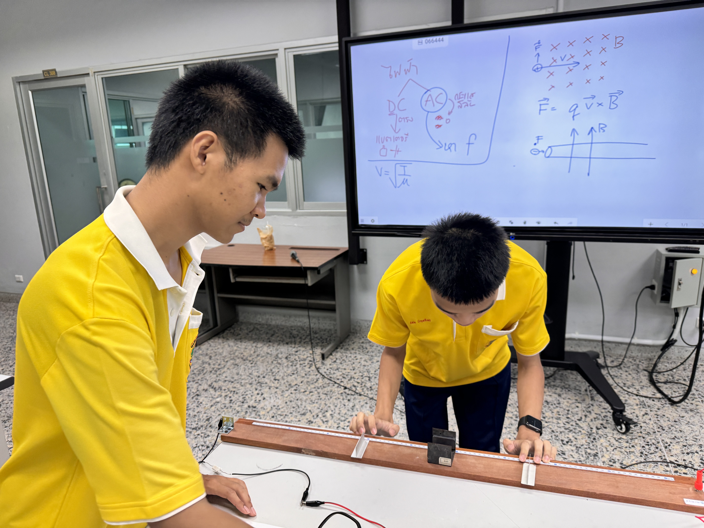
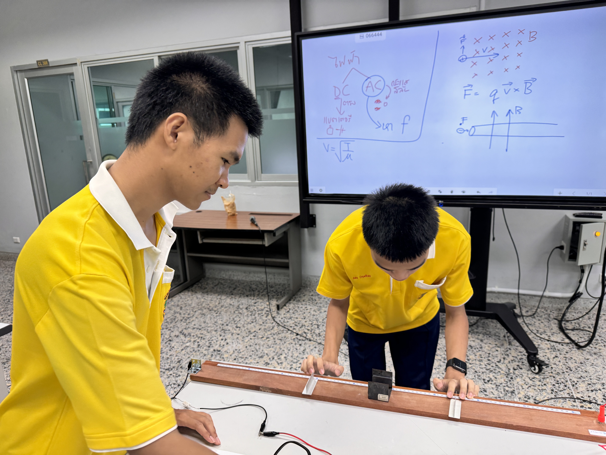

ผมได้ความร่วมงานสัปดาห์วิทยาศาสตร์ ที่ มหาลัยบรูพา กิจกรรมครั้งนี้เกี่ยวกับวิชาฟิสิกส์ เรื่องคลื่นแม่เหล็กไฟฟ้า ในกิจกรรมครั้งนี้ ผมได้รับความรู้จากการทํากิจกรรม ทําให้ผมเห็นภาพและเข้าใจใน เรื่องคลื่นแม่เหล็กไฟฟ้ามากยิ่งขึ้น
กิจกรรมต่อไป


 
